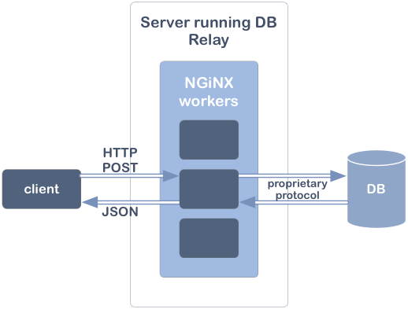
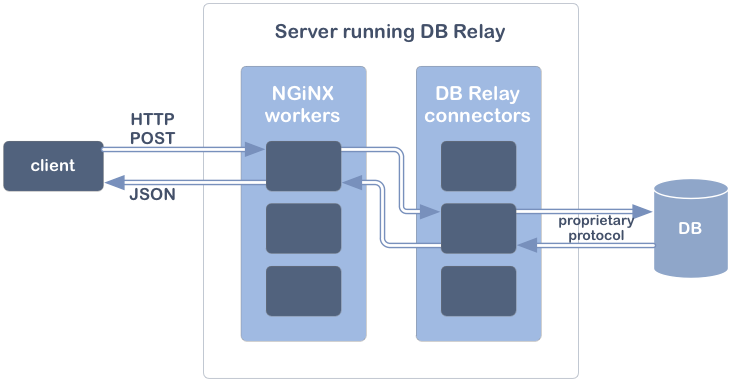
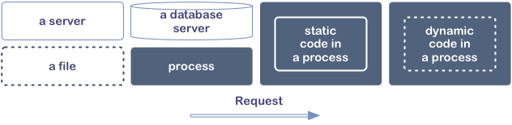

Technically, the database-facing part of DB Relay is an NGiNX module. It runs as a statically linked code in each of the NGiNX workers and uses FreeTDS or UnixODBC to connect to the RDBMS of choice. This is what happens when DB Relay module receives a simple client request from NGiNX (see the first drawing):
A simple client request means, that no "connection_name" parameter was specified in the request. Notice, that in that case the database connection is established and destroyed for each request. While acceptable for a one-off database query, it is not the right behaviour for a chatty client. It puts unnecessary stress on the database as creating and destroying connections are relatively expensive operations. In this scenarion it is also impossible for a client to maintain a state in their database activity, like cursor or temporary table, between the requests.
To address that, a client application may send the "connection_name" HTTP parameter. While details ofthe connection name scope and lifespan are discussed in the interaction logic documentation, here we will show the general concept.
When a "connection_name" is provided, then DB Relay code in NGiNX worker process does not make the database request. Instead, here is what happens:

The legend:
